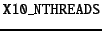
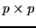

Programmers need an intuitive understanding of the performance characteristics of the core constructs of their programming language to be able to write applications with predictable performance. We will call this understanding a performance model for the language. Desirable characteristics of a performance model include simplicity, predictive ability, and stability across different implementations of the language. The performance model should abstract away all non-essential details of the language and its implementation, while still enabling reasoning about those details that do have significant performance impact. Languages with straightforward mappings of language constructs to machine instructions usually have fairly straightforward performance models. As the degree of abstraction provided by the language's constructs and/or the sophistication of its implementation increase, its performance model also tends to become more complex.
In this chapter, we present an abridged version4.1 of the performance model for X10 v2.4.0 focusing on those aspects that are most relevant for the HPC programmer. Although the rate of change of the X10 language has significantly decreased from earlier stages of the project, the language specification and its implementations are still evolving more rapidly than production languages such as C++ and Java. Therefore, we break this chapter into two logical sections: aspects that we believe are fundamental to the language itself and aspects that are more closely tied to specific choices embodied in the X10 v2.4.0 implementation and thus more likely to change in future versions. The second logical section is presented simultaneously with a discussion of some of the central implementation decisions embodied in the X10 v2.4.0 runtime system and compiler.
The core language model of X10 is that of a type-safe object-oriented language. Thus much of the core performance model is intended to be similar to that of Java. We believe the Java performance model is generally well-understood. Therefore in this section we focus on areas where the performance models for X10 and Java diverge or where X10 has new constructs that do not trivially map to Java constructs.
Functions in X10 can be understood by analogy to closures in functional languages or local classes in Java. They encapsulate a captured lexical environment and a code block into a single object such that the code block can be applied multiple times on different argument values. X10 does not restrict the lifetime of function values; in particular they may escape their defining lexical environment. Thus, the language implementation must ensure that the necessary portions of the lexical environment are available for the lifetime of the function object. In terms of the performance model, the programmer should expect that an unoptimized creation of a function value will entail the heap allocation of a closure object and the copying of the needed lexical environment into that object. The programmer should also expect that trivial usage of closures (closures that do not escape and are created and applied solely within the same code block) will be completely eliminated by the language implementation via inlining of the function body at the application site.
Structs in X10 are designed to be space-efficient alternatives to full-fledged classes. Structs may implement interfaces and define methods and fields, but do not support inheritance. Furthermore structs are immutable: a struct's instance fields cannot be modified outside of its constructor. This particular design point was chosen specifically for its implications for the performance model. Structs can be implemented with no per-object meta-data and can be freely inlined into their containing context (stack frame, containing struct/object, or array). Programmers can consider structs as user-definable primitive types, that carry none of the space or indirection overheads normally associated with objects.
The X10 generic type system differs from Java's primarily because it was designed to fully support the instantiation of generic types on X10 structs without losing any of the performance characteristics of structs. For example, x10.lang.Complex is a struct type containing two double fields; x10.util.ArrayList[T] is a generic class that provides a standard list abstraction implemented by storing elements of type T in a backing array that is resized as needed. In Java, a java.util.ArrayList[Complex], would have a backing array of type Object[] that contained pointers to heap-allocated Complex objects. In contrast, the backing storage for X10 's x10.util.ArrayList[Complex] is an array of inline Complex structs without any indirection or other object-induced space overheads. This design point has a number of consequences for the language implementations and their performance model. Much of the details are implementation-specific so we defer them to Section 4.4 and to the paper by Takeuchi et al [10]. However, one high-level consequence of this design is generally true: to implement the desired semantics the language implementation's runtime type infrastructure must be able to distinguish between different instantiations of a generic class (since instantiations on different struct types will have different memory layouts).
Constrained types are an integral part of the X10 type system and therefore are intended to be fully supported by the runtime type infrastructure. Although we expect many operations on constrained types can be checked completely at compile time (and thus will not have a direct runtime overhead), there are cases where dynamic checks may be required. Furthermore, constrained types can be used in dynamic type checking operations (as and instanceof). We have also found that some programmers prefer to incrementally add constraints to their program, especially while they are still actively prototyping it. Therefore, the X10 compiler supports a compilation mode where instead of rejecting programs that contain type constraints that cannot be statically entailed it, will generate code to check the non-entailed constraint at runtime (in effect, the compiler will inject a cast to the required constrained type). When required, these dynamic checks do have a performance impact. Therefore part of performance tuning an application as it moves from development to production is reducing the reliance on dynamic checking of constraints in frequently executed portions of the program.
Intuitively, executing an at statement entails copying the necessary program state from the current place to the destination place. The body of the at is then executed using this fresh copy of the program state. What is necessary program state is precisely defined by treating each upwardly exposed variable as a root of an object graph. Starting with these roots, the transitive closure of all objects reachable by properties and non-transient instance fields is serialized and an isomorphic copy is created in the destination place. Furthermore, if the at occurs in an instance method of a class or struct and the body of the at refers to an instance field or calls an instance method, this is also implicitly captured by the at and will be serialized. It is important to note that an isomorphic copy of the object graph is created even if the destination place is the same as the current place. This design point was chosen to avoid a discontinuity between running a program using a single place and with multiple places.
Serialization of the reachable object graph can be controlled by the programmer primarily through injection of transient modifiers on instance fields and/or GlobalRefs. It is also possible to have a class implement a custom serialization protocol4.2 to gain even more precise control. An X10 implementation may be able to eliminate or otherwise optimize some of this serialization, but it must ensure that any program visible side-effects caused by user-defined custom serialization routines happen just as they would have in an unoptimized program. Thus, the potential of user-defined custom serialization makes automatic optimization of serialization behavior a fairly complex global analysis problem. Therefore, the base performance model for object serialization should not assume that the implementation will be able to apply serialization reducing optimizations to complex object graphs with polymorphic or generic types.
The X10 standard library provides the GlobalRef and GlobalRail types as the primitive mechanisms for communicating object references across places. Because of a strong requirement for type safety, the implementation must ensure that once an object has been encapsulated in one of these types and sent to a remote place via an at, the object will be available if the remote place ever attempts to spawn an activity to return to the object's home place and access it. For the performance model, this implies that cross-place object references should be managed carefully as they have the potential for creating long-lived objects. Even in the presence of a sophisticated distributed garbage collector [6] 4.3, the programmer should expect that collection of cross-place references may take a significant amount of time and incur communication costs and other overheads.
Closely related to the remote pointer facility provided by GlobalRef is the PlaceLocalHandle functionality. This standard library class provides a place local storage facility in which a key (the PlaceLocalHandle instance) can be used to look up a value, which may be different in different places. The library implementation provides a collective operation for key creation and for initializing the value associated with the key in each place. Creation and initialization of a PlaceLocalHandle is an inherently expensive operation as it involves a collective operation. On the other hand cross-place serialization of a PlaceLocalHandle value and the local lookup operation to access its value in the current place are relatively cheap operations.
As discussed in more detail in Section 4.3, the most general form of finish involves the implementation of a distributed termination algorithm. Although programmers can assume that the language implementation will apply a number of static and dynamic optimizations, they should expect that if a finish needs to detect the termination of activities across multiple places, then it will entail communication costs and latency that will increase with the number of places involved in the finish.
Portability is important because we desire implementations of X10 to be available on as many platforms (hardware/operating system combinations) as possible. Wide platform coverage both increases the odds of language adoption and supports productivity goals by allowing programmers to easily prototype code on their laptops or small development servers before deploying to larger cluster-based systems for production.
X10 programs need to be capable of achieving close to peak hardware performance on compute intensive kernels. Therefore some form of platform-specific optimizing compilation is required. Neither interpretation nor unoptimized compilation is sufficient. However, by taking a source-to-source compilation approach we can focus our optimization efforts on implementing a smaller set of high-level, X10 -specific optimizations with significant payoff while still leveraging all of the classical and platform-specific optimization found in optimizing C++ compilers and JVMs.
Finally, X10 needs to be able to co-exist with existing libraries and application frameworks. For scientific computing, these libraries are typically available via C APIs; therefore Native X10 is the best choice. However, for more commercial application domains existing code is often written in Java; therefore Managed X10 is also an essential part of the X10 implementation strategy.
The overall architecture of the X10 compiler is depicted in Figure 4.1. This compiler is composed of two main parts: an AST-based front-end and optimizer that parses X10 source code and performs AST based program transformation; Native/Java backends that translate the X10 AST into C++/Java source code and invokes a post compilation process that either uses a C++ compiler to produce an executable binary or a Java compiler to produce bytecode.
Using source-to-source compilation to bootstrap the optimizing compilation of a new programming language is a very common approach. A multitude of languages are implemented via compilation to either C/C++ and subsequent post-compilation to native code or via compilation to Java/C# (source or bytecodes) and subsequent execution on a managed runtime with an optimizing JIT compiler. An unusual aspect of the X10 implementation effort is that it is pursuing both of these paths simultaneously. This decision has both influenced and constrained aspects of the X10 language design (consideration of how well/poorly a language feature can be implemented on both backends is required) and provided for an interesting comparison between the strengths and limitations of each approach. It also creates some unfortunate complexity in the X10 performance model because the performance characteristics of C++ and Java implementations are noticeably different.
Figure 4.2 depicts the major software components of the X10 runtime. The runtime bridges the gap between X10 application code and low-level facilities provided by the network transports (PAMI etc.) and the operating system. The lowest level of the X10 runtime is X10RT which abstracts and unifies the capabilities of the various network layers to provide core functionality such as active messages, collectives, and bulk data transfer.
The core of the runtime is XRX, the X10 Runtime in X10. It implements the primitive X10 constructs for concurrency and distribution (async, at, finish, atomic, and when). The X10 compiler replaces these constructs with calls to the corresponding runtime services. The XRX runtime is primarily written in X10 on top of a series of low-level APIs that provide a platform-independent view of processes, threads, primitive synchronization mechanisms (e.g., locks), and inter-process communication. For instance, the x10.lang.Lock class is mapped to pthread_mutex (resp. java.util.concurrent.locks.ReentrantLock) by Native X10 (resp. Managed X10 ).
The X10 Language Native Runtime layer implements the object-oriented features of the sequential X10 language (dynamic type checking, interface invocation, memory management, etc.) and is written in either C++ (Native X10 ) or Java (Managed X10 ).
The runtime also provides a set of core class libraries that provide fundamental data types, basic collections, and key APIs for concurrency and distribution such as x10.util.Team for multi-point communication or x10.lang.Rail.asyncCopy for large data transfers.
In this section, we review the specifics of the X10 v2.4.0 runtime implementation focusing on performance aspects.
The X10 v2.4.0 runtime maps each place in the application to one process.4.4 Each process runs the exact same executable (binary or bytecode).
Upon launch, the process for place 0 starts executing the main activity.
finish { main(args); }
Each X10RT library has its own performance profile--latency, throughput, etc. For instance, the X10 v2.4.0 standalone library is significantly faster than the sockets library used on a single host.
The performance of X10RT can be tuned via the configuration of the underlying transport implementation. For instance, the mpi implementation honors the usual MPI settings for task affinity, fifo sizes, etc.
Multi-point communication primitives--a.k.a. collectives--provided by the x10.util.Team API are hardware-accelerated when possible, e.g., broadcast on BlueGene/P. When no hardware support is available, the Team implementation is intended to make a reasonable effort at minimizing communication and contention using standard techniques such as butterfly barriers and broadcast trees.
As a work around, the X10 v2.4.0 x10.lang.Rail class provides specific methods--asyncCopy--for transferring array contents across places with lower overhead. These methods guarantee the raw data is transmitted as efficiently as permitted by the underlying transport with no redundant packing, unpacking, or copying. Hardware permitting, they initiate a direct copy from the source array to the destination array using RDMAs.4.5
The cornerstone of the X10 runtime is the scheduler. The X10 programming model requires the programmer to specify the place of each activity. Therefore, the X10 scheduler makes per-place decisions, leaving the burden of inter-place load balancing to the library writer and ultimately the programmer.
The X10 v2.4.0 scheduler assumes a symmetrical, fixed number of concurrent execution units (CPU cores) per process for the duration of the execution. This assumption is consistent with the HPCS context--job controllers typically assign concurrently running applications to static partitions of the available computing resources--but will be relaxed in subsequent releases of X10 .
Since each worker primarily interacts with its own deque, contention is minimal and only arises with load imbalance. Moreover, a thief tries to grab an activity from the top of the deque whereas the victim always pushes and pops from the bottom, further reducing contention.
In X10 v2.4.0 , the thief initially chooses a victim at random then inspects the deque of every worker in a cyclic manner until it manages to steal a pending activity.
The X10 scheduler borrows the deque implementation of Doug Lea's Fork/Join framework [7].
Suspended and stopped workers are idle. Starting in X10 2.3, the runtime will mostly suspend excess idle workers, but even if the place is entirely inactive the runtime still requires one worker to be polling the network (i.e., busy waiting) to respond to incoming messages. We expect that at least for some x10rt implementations that in later X10 release it will be possible to eliminate the need for busy waiting entirely.
A worker may yield either by executing a blocking statement or by invoking the Runtime.probe method. The latter executes all the pending activities at the time of the call before returning to the caller. This includes all the pending remote activities--activities spawned here from other places--and all the activities already in this worker deque, but does not include activities in other deques.
As a result, the current scheduler guarantees the following properties that are intended to hold for any X10 implementation.
Property 1 is the goal of any work-stealing scheduler: assuming the effort of finding pending activities is negligible, parallel activities are processed in parallel using X10_NTHREADS parallel processing units.
Property 2 guarantees that available cores are used to find pending activities quickly.
Property 3 mitigates the penalty of busy waiting in the current implementation: spinning workers are never getting in the way of the application provided the user makes sure that X10_NTHREADS is at most equal to the number of hardware cores available to the runtime for each place. For instance, if running 8 places on a 32-core node, X10_NTHREADS must not be larger than 4 workers per place.
Thanks to this behavior, finish has much less scheduling overhead than other synchronization mechanisms, e.g., when constructs, and should be preferred when possible.
While this optimization is typically very effective at improving performance without observable drawbacks, it may lead to unbounded stack growth for pathological programs. Therefore, it may be disabled by setting the environment variable X10_NO_STEALS.4.7
The X10 v2.4.0 runtime also allocates one small heap object per async. Again, anything smaller than that should be executed sequentially rather than wrapped with an async. Moreover, memory allocation and garbage collection can become a bottleneck if vast amounts of activities are created concurrently. The runtime therefore exposes the Runtime.surplusActivityCount method that returns the current size of the current worker deque. Application and library code may invoke this method to decide whether or not to create more asynchronous activities, as in:
if (Runtime.surplusActivityCount() >= 3) m(); else async m();
In the worst-case scenario, with  places, there will be counters in each place, that is,  counters for each finish. Moreover, there could be one inter-process message for each activity termination event. Messages could contain up to data elements.
In practice however much fewer counters, fewer messages, and smaller messages are necessary thanks to various optimizations embedded in the X10 v2.4.0 implementation. In particular, events are accumulated locally and only transmitted to the finish place when local quiescence is detected--all local activities for this finish have completed. Counters are allocated lazily. Messages use sparse encodings.
To complement these runtime mechanisms, the programmer may also specify finish pragmas, which inform the runtime system about the kind of concurrent tasks that the finish will wait for, as in:
@Pragma(Pragma.FINISH_ASYNC) finish at (p) async s;
The pragmas key the usage of more efficient implementations of distributed termination detection.
Currently, the runtime system supports five finish pragmas. Below the ``home'' place of a finish is the place at which the finish statement was spawned. A ``remote'' place is a place that is not home.
For this scheme to be a correct implementation of finish, it must be the case that the number of remote creations and terminations of activities is equal, and these events happen before the count of local creation and termination events (for asyncs controlled by this finish) reaches .
For example, this idiom is applicable for this (often used) ``ping pong'' idiom:
val home=here;
finish
at (other) async /*Ping*/ {
S;
at (home) async /*Pong*/
S1;
}
According to the semantics of finish the statement will
terminate when both Ping and Pong have terminated. A
naive implementation would require the finish to be informed of
the creation of Pong and the termination of Ping. Note
however, that both of these events are remote - we consider at (other) async
as a ``fused'' construct which starts at the home place and finishes at the remote place.
The FINISH_HERE implementation will only
count the creation of Ping and the termination of Pong
(both of these are local events).
There are some situations in which an async may be annotated with @Uncounted (from the x10.compiler package). This annotation tells the compiler and runtime not to perform any of the book-keeping necessary to ensure that the governing finish progresses only after this async has terminated.
There are two principle cases in which the use of Uncounted is recommended. First, the programmer may be able to establish that the lifetime of this async and all asyncs spawned in its dynamic extent is contained within the lifetime of the current activity. For instance one situation in which this happens is if the async corresponds to a remote message send, and on the remote side the body of the message executes some local operations and responds with a message send to the originator. In the meantime, the originator sits waiting in a loop for the return message (e.g. by executing Runtime.probe(). This is a safe use of Uncounted (see chap:Unbalanced).
The second situation is one in which the async corresponds to a message send directly implemented in the hardware, and some other reasoning is used to establish that these messages complete in time (see chap:RA).
The X10 v2.4.0 implementation of the atomic construct uses a place-wide lock. The lock is acquired for the duration of the atomic section. The when construct is implemented using the same lock. Moreover, every suspended when statement is notified on every exit from an atomic section, irrespective of condition.
The per-place lock effectively serializes all atomic operation in a place whether they might inerfere or not. This implementation does not scale well beyond a few worker threads. Similarly, the when implementation does not scale well beyond a few occurrences (distinct condition variables).
The X10 standard library provides various atomic classes and locks that enable better scaling. Both the collecting finish idiom and the x10.util.WorkerLocalStorage API may be also used to minimize contention.
When an application programmer writes X10 code that they are intending to execute using Native X10 , their base performance model should be that of C++. Unless discussed below, the expected performance of an X10 language construct in Native X10 is the same as the corresponding C++ construct.
Non-interface method dispatch corresponds directly to a C++ virtual function call. Interface method dispatch will involve additional table lookups and empirically is 3 to 5 times slower than a virtual function call. C++ compilers typically do not aggressively optimize virtual calls, and will certainly not be able to optimize away the dispatch table lookup used to implement interface dispatch. Therefore, as a general rule, non-final and interface method invocations will not perform as well in Native X10 as they will in Managed X10 .
Unless specially annotated, all class instances will be heap allocated and fields/variables of class types will contain a pointer to the heap allocated object.
All other X10 structs are mapped to C++ classes. However, all of the methods of the C++ class are declared to be non-virtual. Therefore, the C++ class for a struct will not include a vtable word. Unlike object instances, struct instances are not heap allocated. They are instead embedded directly in their containing object or stack-allocated in the case of local variables. When passed as a parameter to a function, a struct is passed by value, not by reference. In C++ terms, a variable or field of some struct type S is declared to be of type S, not S*.
This implementation strategy optimizes the space usage for structs and avoids indirections. Programmers can correctly think of structs as taking only the space directly implied by their instance fields (modulo alignment constraints). However, passing structs, especially large structs, as method parameters or return value is significantly more expensive than passing/returning a class instance. In future versions of X10 we hope to be able to pass structs by reference (at the implementation level) and thus ameliorate this overhead.
The performance of an X10 generic class is very similar to that of a similar C++ templatized class. In particular, instantiation based generics enable X10 generic types instantiated on primitives and structs to be space efficient in the same way that a C++ template instantiated on a primitive type would be.
Because the X10 v2.4.0 implementation does not include a distributed garbage collector, if a GlobalRef to an object is sent to a remote place, then the object (and therefore all objects that it transitively refers to) become uncollectable. The life-time of all multi-place storage must currently be explicitly managed by the programmer. This is an area of the implementation that needs further investigation to determine what mix of automatic distributed garbage collection and additional runtime interfaces for explicit storage control will result in the best balance of productivity and performance while still maintaining memory safety.
The C++ compilation model is generally file-based, rather than program-based. In particular, cross-file inlining (from one .cc file to another) is performed fairly rarely and only at unusually high optimization levels. Since the method bodies of non-generic X10 classes are mostly generated into .cc files, this implies that they are not easily available to be inlined except within their own compilation unit (X10 file). Although for small programs, this could be mitigated by generating the entire X10 application into a single .cc file, this single-file approach is not viable for the scale of applications we need Native X10 to support.
Clearly, the performance models described in this chapter are not the final and definitive X10 performance model. However, we do believe that the language specification and its implementations are well-enough understood that it is possible for significant X10 programs to be written and for programmers to obtain predictable and understandable performance behavior from those programs. As the X10 implementations continue to mature, we expect to be able to eliminate some of the less desirable features of the X10 v2.4.0 performance models.
We hope that the open discussion of our design decisions in implementing X10 and their implications for its performance will be useful to the X10 programmer community and to the broader research community that is engaged in similar language design and implementation projects.